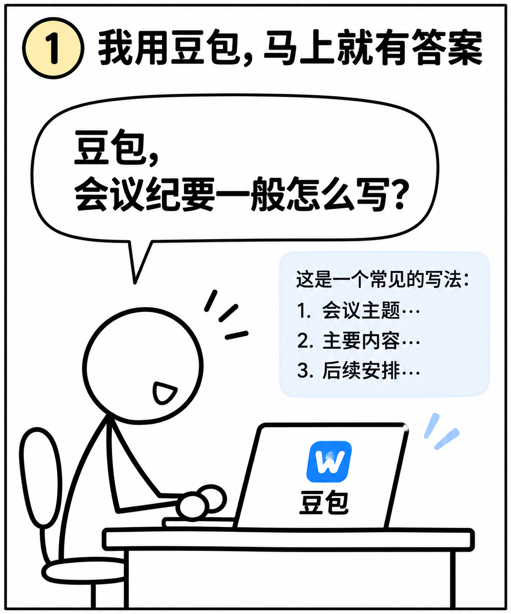
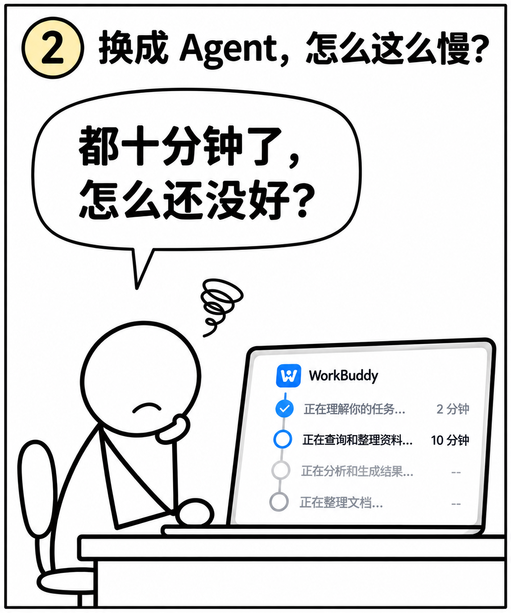
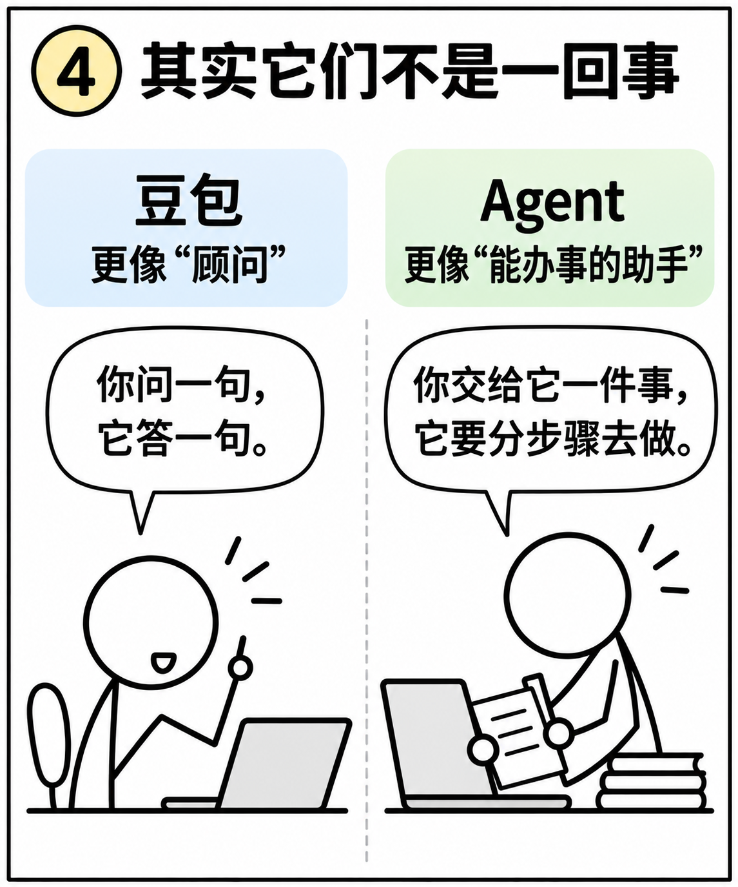
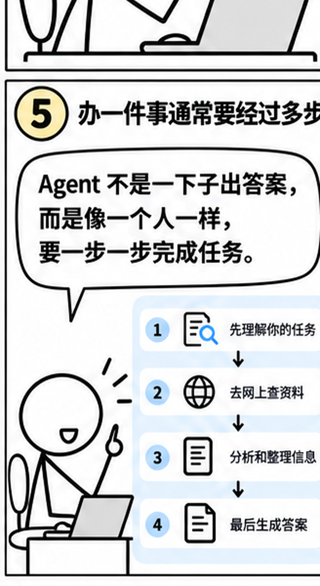
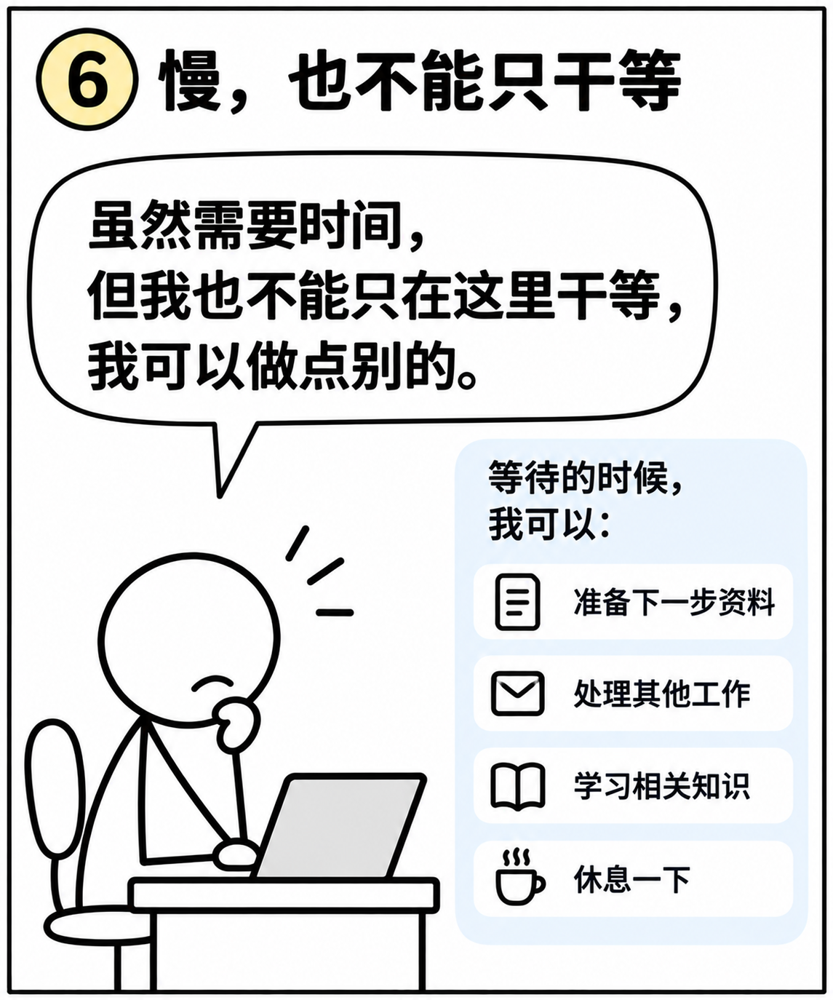
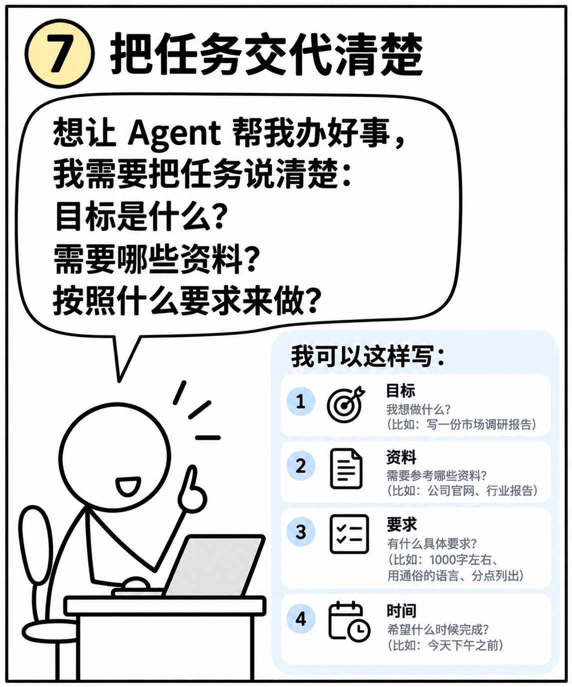

为什么豆包几秒就回，
Agent 却让我等十分钟？
不讲复杂术语，先用八张漫画弄明白。
先记住：问一个问题，和交办一件事情，不完全一样。Agent 可能需要多个步骤，但等得久不代表一定做得好。






动手试一试：把一句话交代清楚
原来只说：“帮我整理一下会议内容。”现在试试补全四件事：材料、目标、格式、限制。
请只根据下面这段【模拟会议记录】，帮我整理一份会议摘要。
【模拟会议记录】
周三召开便民服务讨论会。大家决定下周五前完成预约指引初稿。王老师负责整理群众常见问题。具体发布时间还没有确定。
【请交付】
1. 会议主题
2. 三条以内的主要结论
3. 待办事项：事项、责任人、截止时间
4. 需要进一步确认的信息
【要求】
只使用我给的材料；不知道的写“待确认”，不要编造日期、责任人或决定。先生成草稿，不要对外发送。
复制后可粘贴到你正在使用、且获准使用的 AI 工具中。本网页不会替你向外部服务发送材料。
工作资料安全提醒：本课使用虚构材料。真实工作中，涉密资料、内部敏感信息、公民个人信息等，应按所在单位的保密和数据管理要求处理，不要未经授权上传到公共 AI 工具。
学会了吗？做 3 道小题
你可能还想问
Agent 等十分钟，是不是一定更高级？
不是。它可能在分步骤处理，也可能卡住了。应看任务进度和最终质量，而不是只看耗时。
以后是不是不用豆包了？
当然不是。简单提问可以继续用熟悉的聊天 AI；需要多步完成的任务，再考虑 Agent。
我不会写复杂提示词怎么办？
先记住四件事：要做什么、用什么材料、做成什么样、哪些事不能擅自做。
还有没弄明白的？
可以先写下你遇到的问题。作者在线回复功能还未接入，目前不会自动提交或保存。
🎉 第一课完成！下一步：学会给 Agent 一个清楚的任务。